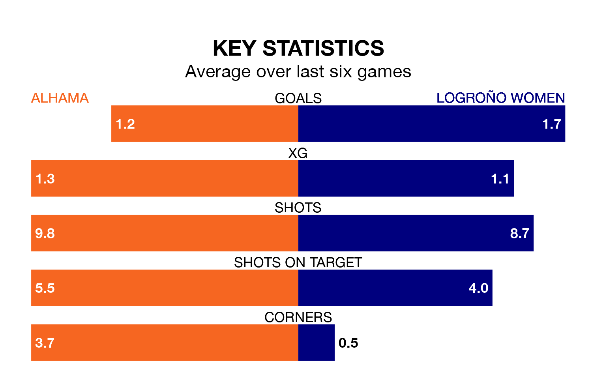

Alhama host Logroño Women in Sunday's match looking to bounce back from defeat last time out in Primera Federación Femenina.
Alhama, who sit fourth in the league after 13 games, fell to a 2-0 away defeat to AEM Lleida Women on January 7.
They face a Logroño side who picked up a win in their last match, a 1-0 victory against Madrid II Women, and who sit 10th in the table.
With 22 goals in 13 games so far this season, Alhama are the league's third-highest scorers with 1.7 goals per game. And they are conceding fewer than average, letting in 13 goals at a rate of 1.0 per game.
Logroño are also above average scorers, with 1.4 goals per game, compared to a league average of 1.2. They have conceded 1.5 goals per game.
The home team are in mixed form in Primera Federación Femenina, with two wins and two draws from their last six games.
With two wins and a draw over that period, the visitors' form is slightly worse – they have taken seven points from 18, compared to Alhama's eight.
Updated: 10:50, 10/01/24